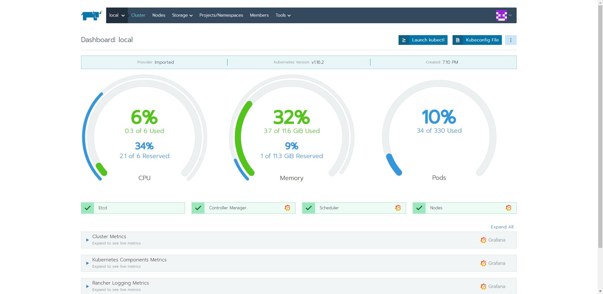

Installing rancher
Install cert-manager
Install the CustomResourceDefinition resources separately
kubectl apply -f https://raw.githubusercontent.com/jetstack/cert-manager/release-0.10/deploy/manifests/00-crds.yaml
Create the namespace for cert-manager
kubectl create namespace cert-manager
Label the cert-manager namespace to disable resource validation
kubectl label namespace cert-manager certmanager.k8s.io/disable-validation=true
Add the Jetstack Helm repository
helm repo add jetstack https://charts.jetstack.io
Update your local Helm chart repository cache
helm repo update
Install the cert-manager Helm chart
helm install --name cert-manager --namespace cert-manager --version v0.10.1 jetstack/cert-manager
kubectl get pods --namespace cert-manager
Install rancher
Add an ingress with TLS
Provide an ingress proxy with SSL support. First create the certificate with mkcert (or omgwftssl) for the domain you want. Here we choose rancher.olympus.home
Do let's set hosts file accordingly on your own machine
- Windows: c:\windows\system32\drivers\etc\hosts
- Mac/Linux: - /etc/hosts
Edit the appropriate file for your system and add an entry
<your local ip> rancher.<your domain>
Mine was
192.168.0.200 rancher.olympus.home
Add the same entries on your VM's in the /etc/hosts file of each VM.
Alternatively, if you have a local DNS running, you can add the entry there once (<== prefered).
Next generate a certificate with mkcert
mkcert rancher.olympus.home localhost 127.0.0.1 ::1
mkcert will create local CA certificatge with which it'll sign the requested certificate. The cluster will need to know that CA certificate as well to verify its validity.
copy %APPDATA%\mkcert\rootCA.pem ./cacerts.pem
Install an ingress proxy controller to expose the future rancher website. The rancher installer will create the ingress pointing to a certificate called cacerts.pem.
helm install stable/nginx-ingress --name ingress-nginx --namespace ingress-nginx
Since we're running on bare-metal, kubernetes has no clue on which infrastructure it is running on. We need to expose the external ip directly
kubectl patch svc ingress-nginx-nginx-ingress-controller --namespace=ingress-nginx -p '{"spec": {"type": "LoadBalancer", "externalIPs":["192.168.0.200"]}}'
or get the service from the cluster
kubectl get services -o wide ingress-nginx-nginx-ingress-controller --namespace=ingress-nginx -o yaml > ./rancher/ingress-controller.yaml
Add the external IP manually and apply
kubectl apply -f ./rancher/ingress-controller.yaml
Install Rancher
Next we're going to install rancher. We want the alpha version, since we would like to install istio later on.
helm repo add rancher-latest https://releases.rancher.com/server-charts/latest
kubectl create namespace cattle-system
Add the certificates for the installer to find.
kubectl -n cattle-system create secret generic tls-ca --from-file=cacerts.pem
kubectl -n cattle-system create secret tls tls-rancher-ingress --key ./rancher.olympus.home+3-key.pem --cert ./rancher.olympus.home+3.pem
Run the helm chart
helm install rancher-latest/rancher --name rancher --namespace cattle-system --set hostname=rancher.olympus.home --set ingress.tls.source=secret --set privateCA=true --version 2.3.2-rc3
Now open your browser at rancher and create your login.
Note how the cattle-cluster-agent cannot start properly. That is due to the fact that we use a hostname that is not resolvable from the internet. We didn't use a DNS server to point to this installation.
We need to allow the agent to use the node's /etc/hosts file.


And save ;)
Monitoring & Istio install from Rancher
Monitoring with Prometheus
Adding monitoring through rancher, adds a Prometheus service to scrape the information from the cluster.

I slimmed down the defaults, since this cluster is not to take the heavy load a cluster usually does. We only use this one for demo purposes. In general go with the defaults for a production environment.
With monitoring enabled, we get extra live information.

Istio
Rancher allows istio to be install automatically given minimum version 2.3.0-alpha5. We installed Rancher 2.3.2-rc3, so all good there.
Next add Istio. For this cluster, divide the default settings roughly by 4. I used the following:


Alternatively, you can use ./src/rancher/istio-rancher-values.yaml file and use that as an entry for the istio helm deployment under local Project System - Apps - Istio and upgrade it with the new values. These values are taken from the demo values of Istio source code and should suffice for a mini cluster. The minimal values are taking way too much cpu and memory into account and are designed for higher throughput (read production).